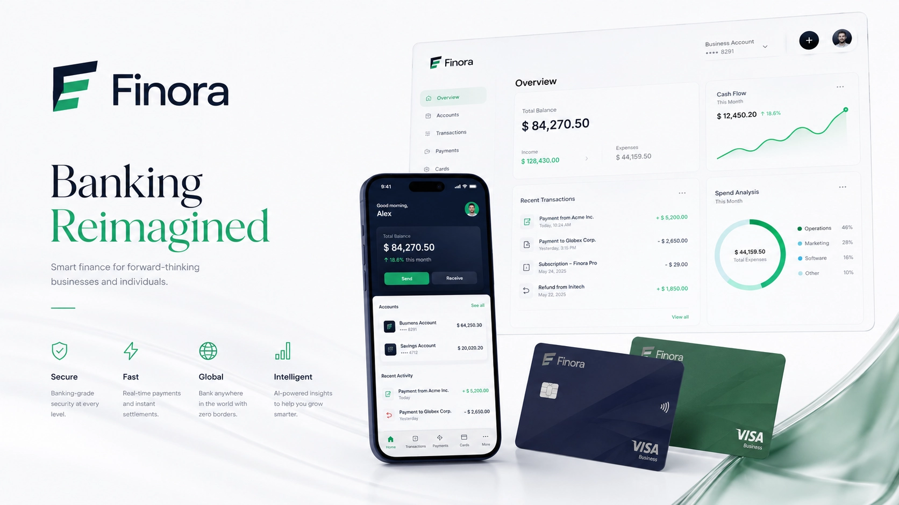
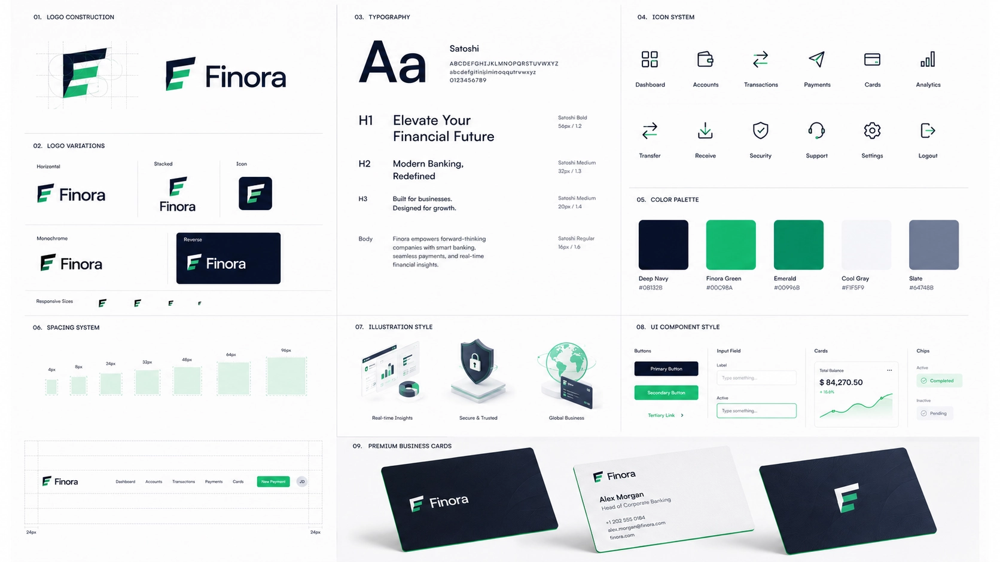
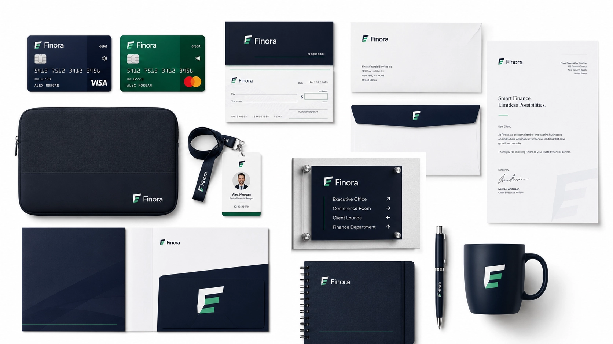
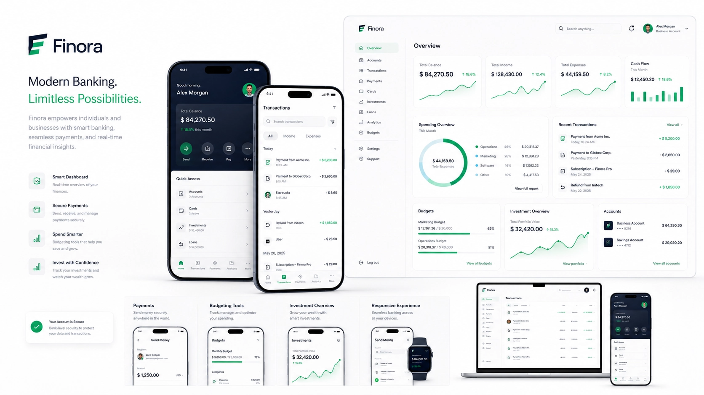
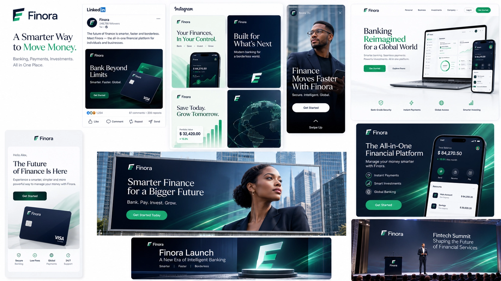
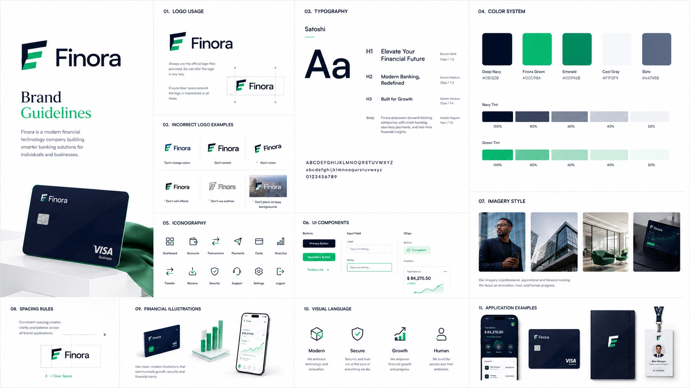

Building a sophisticated financial technology brand identity designed to communicate trust, security, and innovation while creating a seamless experience across digital banking products, customer touchpoints, and enterprise financial services.

Finora was created as a modern financial technology brand focused on delivering secure, intuitive, and premium banking experiences. Rather than designing only a visual identity, the objective was to build a scalable brand system capable of supporting digital banking products, enterprise partnerships, customer acquisition, and future financial innovation while inspiring confidence at every interaction.
Finora
Financial Technology (FinTech)
Brand Strategy, Identity Design, Product Design
Logo, Identity System, Banking UI, Marketing Assets
Every element of Finora's visual identity was developed to communicate reliability without feeling traditional. The combination of geometric forms, refined typography, sophisticated colours and modern layouts creates a flexible identity capable of supporting both digital banking experiences and enterprise financial services.

A modern geometric symbol paired with a refined wordmark creates immediate recognition while communicating security, innovation and financial stability across digital and physical environments.
Contemporary sans-serif typography provides exceptional readability while reinforcing professionalism, precision and confidence across every customer interaction.
Deep navy establishes trust, emerald green represents financial growth, while subtle neutral tones create a clean and sophisticated visual experience.
Minimal layouts, generous white space and structured visual hierarchy create an identity system that remains consistent across banking products, presentations and future digital services.
A financial brand earns credibility through consistency. Every Finora application was carefully designed to reinforce trust across physical materials, workplace environments, payment products and customer interactions. Whether someone is using a payment card, attending a business meeting or visiting a branch office, every touchpoint communicates the same premium experience.

Premium debit and credit cards combine elegant materials, refined typography and subtle security-inspired graphics to create products that customers feel proud to carry while reinforcing Finora's trustworthy identity.
Business cards, presentation folders, letterheads, notebooks and executive documents follow one cohesive visual language that strengthens professionalism across meetings, partnerships and client communications.
Reception signage, employee identification, environmental graphics and branded office spaces create welcoming environments that communicate transparency, security and confidence from the moment customers arrive.
Every branded asset follows clearly defined visual standards, allowing Finora's identity to remain consistent across future financial products, international offices and evolving customer experiences.
Digital products are often the primary way customers experience a financial brand. Finora's interface was designed to simplify complex financial tasks through intuitive navigation, clean layouts and thoughtful interactions that help users manage their finances with confidence across desktop and mobile platforms.

A clean analytics dashboard presents balances, spending insights, investment performance and recent activity in an organised interface that makes financial information easy to understand at a glance.
The mobile application allows customers to transfer funds, monitor transactions, manage cards, pay bills and access financial services through a secure experience designed for speed and convenience.
Reusable interface components establish consistency across every screen while enabling future expansion into lending services, investment products and business banking without compromising usability.
Thoughtful navigation, generous spacing and clear visual hierarchy reduce complexity, helping customers complete financial tasks quickly while reinforcing Finora's premium and trustworthy personality.
Finora's marketing system was developed to communicate security, innovation and financial empowerment across every customer touchpoint. Every campaign reinforces the brand's credibility while helping customers feel confident choosing Finora as their trusted financial partner.

Professional educational content combines financial insights, customer success stories and premium editorial layouts to position Finora as an approachable yet authoritative financial technology company.
Integrated campaigns introduce new banking features, digital products and financial services through cohesive storytelling designed to educate customers while generating excitement and trust.
Website banners, mobile advertisements, email campaigns and conference displays follow one visual language that maximises recognition while maintaining Finora's premium enterprise aesthetic.
Every communication—from digital advertising to investor presentations—reinforces one cohesive identity, strengthening long-term recognition and customer confidence across every platform.
Finora's comprehensive brand guidelines provide a clear framework for applying the identity consistently across products, marketing campaigns and future innovations. The system ensures the brand remains recognisable, scalable and trustworthy as the business continues to grow.

Detailed standards for logo usage, typography, colours, imagery and interface design ensure every customer touchpoint communicates one cohesive and professional brand experience.
The identity system is flexible enough to support future banking products, international expansion, enterprise partnerships and emerging financial technologies while maintaining visual consistency.
Finora is positioned as a premium financial technology company that inspires confidence, strengthens customer relationships and communicates innovation without sacrificing credibility or trust.
The result is a complete enterprise-ready brand identity that combines strategic thinking, modern design and intuitive digital experiences into a cohesive system built for sustainable long-term growth.